Audit Trail
SCR-AUDIT-001·002·003·004·005 · Integrated lookup · View by category · Change history details · Export
Audit Trail lookup
- 1.1Screen layout
- 1.2Categories and filters
- 1.3Change history details
1.1Screen layout
Overview
This screen shows in one place when, by whom, what, from what to what, and why clinical data was changed. It is view only, so this screen has no buttons to edit or delete. History can only be added to and is never erased 2.1. Read it from top to bottom in this order: compliance notice → category → filters → list. To look at one record in detail, click “View” to open its detail window.
Screen guide
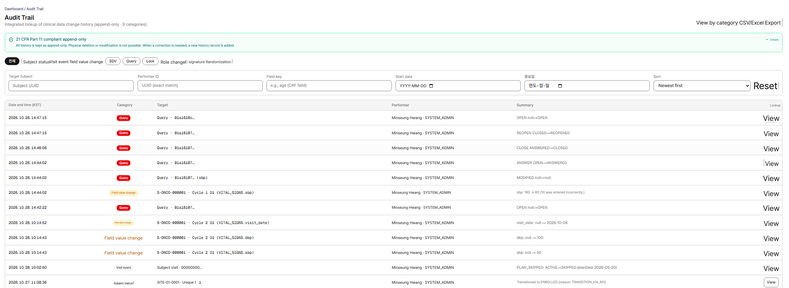
“View by category” — Opens a screen that shows only one category, with its own columns 3.1. Clicking it first opens the “Subject status” tab, and you switch tabs from there.
“CSV/Excel Export” — Exports the range currently set by your filters as a file 4.1. This button is shown only to data managers and auditors.
The screen subtitle states its scope — “Integrated lookup of clinical data change history (append-only · 9 categories)”.
21 CFR Part 11 compliance notice — History retention policy and the regulations it is based on 2.1 · 2.2.
Quick category selection — 9 categories plus “All” 1.2.
Secondary filters — Target Subject · Performer ID · Field key · Start date · End date · Sort 1.2.
The list has 6 columns — date-time (KST) · category · target · performer · summary · view. All times are converted to Korea time for display.
“View” — Opens the detail window for that one record 1.3. Clicking anywhere on the row also opens the same window.
Category badge — The 9 categories are each shown in a different color.
Access paths
- • Left menu “Quality·Regulatory > Audit Trail” — appears only after you enter a project.
- • Project dashboard > “Audit Trail” widget — click a row in the list, or click “Audit Trail →” at the bottom right.
- • The “Audit summary” · “Category distribution” widgets on the same dashboard show counts only, and clicking them does not navigate. The two places above are the only entry points.
Precautions
Easily misunderstood behavior
- • Only the principal investigator · data manager · auditor can enter this screen. System administrators can open every screen with global permission, so they can enter here as well. Workspace administrators, research nurses and clinical research associates (CRA) do not see this screen in the left menu, and even if they enter the address directly, they only see a notice that permission is required. History of management and operation actions, such as adding users or changing settings, is not on this screen but on the “Operation history” screen. Also, a principal investigator sees only the history of their own participating sites; the system filters this automatically, not the screen itself.
1.2Categories and filters
Overview
There are two layers for narrowing the list. Use the category chips at the top to choose which kinds of history to view, and the secondary filters below to narrow by target, performer and period. The two layers apply together. When you change a value, the list reloads automatically after a short moment; you do not press a separate “Search” button.
Screen guide
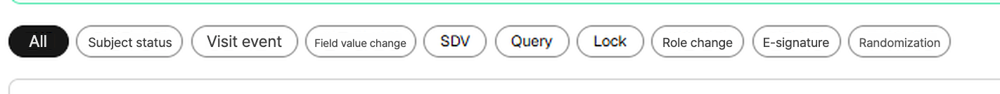
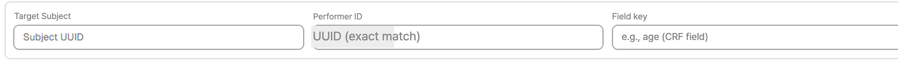
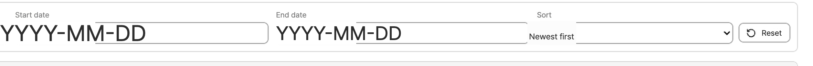
“All” — Shows all 9 categories. This is the state when you first enter.
Category chips — Each click turns a chip on or off. You can select several together. If none is selected, the view is the same as “All”.
Target Subject — Specify a subject by UUID (“Subject UUID”). You can enter several, separated by commas.
Performer ID — Specify the user who made the change by UUID (“UUID (exact match)”).
Field key — Narrows by CRF field name (“e.g., age (CRF field)”). Applies only to “Field value change” history.
Start date — From this date on. If left blank, from the beginning.
End date — Up to this date. If left blank, up to the present.
Sort — Newest first (default) or Oldest first.
“Reset” — Returns both the category and the filters to their initial state.
Precautions
Easily misunderstood behavior
- • You can only find subjects and performers by UUID. The value the input box asks for is not the screening number (e.g., S-ONCO-000001) shown in the “Target” column of the list, nor a person's name. If you enter one of those, the results will look empty. Check the subject UUID in the “Subject ID” field of the change history detail window 1.3, or in the address of the subject screen. To view the history of one specific subject, it is faster to narrow by period and category and then look for the subject in the “Target” column.
1.3Change history details
Overview
This is the window that shows one history record in full. Four groups appear in order: history information · target · reason · before/after values, and at the very bottom is the reference number for that record. Depending on the stored values, more groups may appear: for an e-signature record, the signature information is shown, and when the system recorded connection details, IP · access program is shown too. This window also has no function for editing.
Screen guide
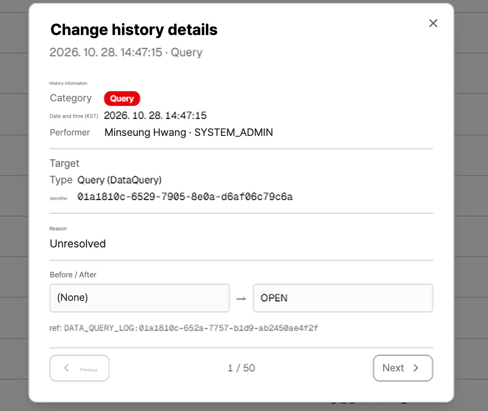
“Previous” / “Next” — Moves to the adjacent record in list order. The center “1 / 50” shows your current position and the range you can move through.
Close (×) — Closes the window and returns to the list.
History information — Category · date-time (KST) · performer (name · role). The performer is shown as name · role code.
Target > type — Shows the Korean name and the original term together (“Query (DataQuery)”). Types newly added to the system show only the original term.
Reason — Appears only when a reason was entered at the time of the change.
Before / After — The left side is the previous value and the right side is the changed value. An empty spot is shown as “(none)”.
Reference number (ref) — The value that points to this one history record. When you contact support or compare against other records, pass this value along as it is. It is the same value as the first column of the downloaded file 4.3.
Precautions
Easily misunderstood behavior
- • “Previous / Next” moves only within the range currently loaded in the list. The list loads 50 records at a time, so it shows “1 / 50” as in the capture, and you cannot move past the 51st record from this window. To see later history, close the window, turn the list page with “Next” below the list, and then open the record again.
Regulatory compliance notice
- 2.1Append-only notice
- 2.2Viewing the regulation text
2.1Append-only notice
Overview
The green bar above the list is a notice that explains how the history on this screen is preserved. The key point is append-only: once history has been stored, it cannot be edited or deleted. If something needs correcting, it is recorded as a new entry added to the history. That is why this screen has no edit or delete buttons anywhere. When you enter as an auditor, this notice is already expanded from the start.
Screen guide
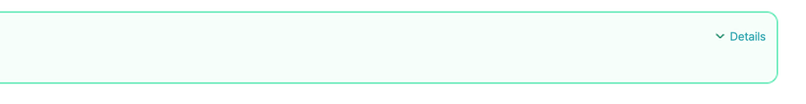
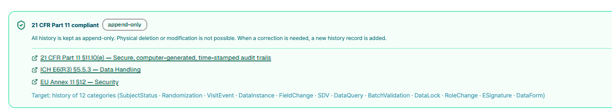
“Details” — Expands the notice. After it is expanded, the button changes to “Collapse”.
When expanded, three regulations and the list of history targets appear. You can click a regulation to see its original text 2.2.
Append-only badge — Shows the retention method in a single word.
Body text — “All history is retained as append-only, and physical deletion or modification is not possible. When a correction is needed, a new history record is added.”
List of history targets — “Targets: history in 12 categories (SubjectStatus · Randomization · VisitEvent · DataInstance · FieldChange · SDV · DataQuery · BatchValidation · DataLock · RoleChange · ESignature · DataForm)”
Precautions
Must check Data corruption · Form cannot be completed
- • The “12 categories” in the notice and the “9 categories” in the screen subtitle are different: only 9 categories are actually searched and exported. The 12 in the notice is the full set of items subject to retention under the regulation, while the category chips, tabs and export scope on this screen all cover the 9 categories. The three categories that differ (DataInstance · BatchValidation · DataForm) do not yet appear on this screen, so do not look for them here. In particular, management and operation actions, such as changes to the CRF form itself, are checked on the “Operation history” screen.
2.2Viewing the regulation text
Overview
The regulation names in the notice are all links. Clicking one opens the public text site of that regulation in a new tab, and the SMART-EDC tab you were working in stays as it is. The purpose is to let you check the cited article on the spot when you prepare audit materials.
Screen guide
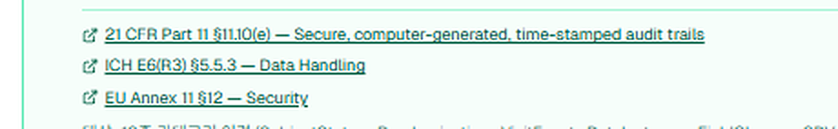

21 CFR Part 11 §11.10(e) — “Secure, computer-generated, time-stamped audit trails”. This is the U.S. FDA regulation on electronic records and electronic signatures, and it is the basis for this screen.
ICH E6(R3) §5.5.3 — “Data Handling”. This is the data handling clause in the clinical trial standards.
Clicking it opens the source site in a new tab.
EU Annex 11 §12 — “Security”. This is the EU annex on computerized systems.
You can confirm that the address has changed to an external site — not SMART-EDC.
This is the title of the opened document. Since it is the full regulation text, find and read the required section within the document.
Precautions
Easily misunderstood behavior
- • The section numbers written in the notice and the chapter numbers in the opened document may differ. The capture shows this: the notice says “ICH E6(R3) §5.5.3”, but the matching chapter in the opened document is “3. SPONSOR”. The chapter number changed with the revision, but the content is the same data handling clause. Also, these sites are external sites that SMART-EDC does not manage, so their addresses or layouts may change. When you need a basis for submission or archiving, use a copy of the regulation that your institution has obtained, not the link.
View by category
- 3.1Tab switching and dedicated columns
3.1Tab switching and dedicated columns
Overview
This screen lets you pick one category and lay out only the items that exist in that category as columns. For example, subject status history adds previous status · new status columns, and e-signature history adds trigger · invalidation columns. The filters, compliance notice and detail window are shared with the integrated lookup; what changes is only the column layout of the table.
Screen guide
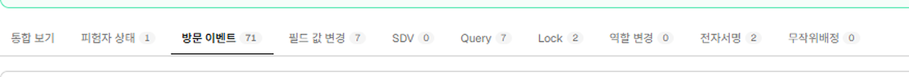

“Integrated view” — Returns you to the screen that shows all 9 categories at once 1.1.
Category tabs — Clicking one looks up only that category. The tab you are currently viewing is shown with an underline and bold text.
“View” — Opens the same detail window as the integrated lookup 1.3.
The number next to each tab is the total number of history records in that category. Use it as a guide for deciding where to look. A tab with 0 records is still displayed.
The dedicated column comes right after “Performer” — the “Summary” column from the integrated lookup is not here. Content you could read in one line there does not appear on this screen.
The category-specific columns go in that spot. Visit event has two of them: “Visit” · “Action” (see the table below).
If there is no value, the cell is left as “-”. In the capture, both columns on the Visit event tab show “-” in every row.
The 9 categories and their dedicated columns
| Category | What it records | Dedicated columns |
|---|---|---|
| Subject status | Subject status transitions | Previous status · New status · Terminal |
| Visit event | Visit created · performed · missing | Visit · Action |
| Field value change | CRF entry value edits | Visit · Field · Change type |
| SDV | Source data verification performed | Action |
| Query | Query opened · answered · closed | Action · Priority |
| Lock | Locked · unlocked | Lock type · Action |
| Role change | Project role assignment changes | Previous role · New role |
| E-signature | Signature · signature invalidation | Trigger · Invalidation |
| Randomization | Assignment · unassignment | Assignment type · Assignment number |
Precautions
Must check Data corruption · Form cannot be completed
- • There are cases where the screen alone does not tell you what happened. When there is no “Summary” column and the dedicated column is also empty as “-”, the row keeps only the date-time, target and performer, as with the Visit event tab in the capture. In that case, use “View” on the row to open the details, or go back to “Integrated view” and read the Summary column. An empty dedicated column does not mean the history itself is empty; it means that category does not record that item.
Audit Trail export
- 4.1Checking scope and running the export
- 4.2Downloading the export file
- 4.3The downloaded file
4.1Checking scope and running the export
Overview
This window opens when you click “CSV/Excel Export” at the top right of the list. The file is not created on the spot. The system only accepts the request and builds the file in the background, and when it is done you download it from the export screen 4.2. The window contains the filters currently applied as they are, so to change the scope, close the window and edit the list filters.
Screen guide
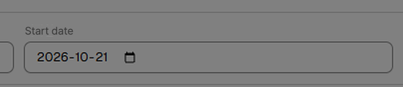

Set the period first — at least one of the list filter's start date or end date. If you do not set one, the run button cannot be pressed (see Precautions below).
Format — Choose either CSV (default) or Excel.
“Run export” — Accepts the request and closes the window.
A message appears: “Audit Trail export has started. When it is complete, download it from the export screen.” You can go straight there with “View export screen” 4.2.
Category — The categories you selected as chips are carried over as they are. If you did not select any, it shows “All 9 categories”.
Period — If you left the end date blank, it is shown as “~ present”.
Estimated count — It may stay as “—”, as in the capture. This happens because the list is loaded without counting the total records. It is not a malfunction, and you can run the export as it is.
Personal data notice — “Personal data, such as names and screening numbers, is automatically masked depending on permissions.” This is not a setting that you can turn on or off.
Precautions
Must check Data corruption · Form cannot be completed
- • If you do not specify a period, the “Run export” button cannot be pressed. A warning appears in the window: “An Audit Trail export requires a period to be set (start or end, at least one). Set the period in the filters and try again.” and the button is dimmed. Close the window, fill in the start date (or end date) in the list filters, and open it again. Even if you want the full period, you must enter at least a start date for the export to run.
4.2Downloading the export file
Overview
This screen shows what happened to the requested export and lets you download the file. The card at the top holds the request details (what, when, how many records, which format), and the green card below holds the result. You can get here from the “View export screen” link right after you start an export, or click the item in Data export > Export history to come back later.
Screen guide
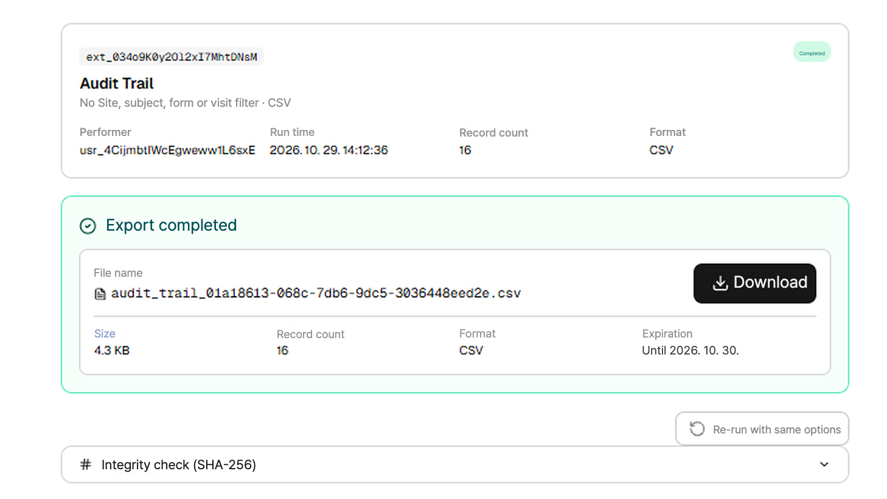
“Download” — Downloads the file 4.3.
Export number — Include this value when you contact support.
Check that the type is “Audit Trail”. The line right below it is the scope of that export. The capture reads “No Site, subject, form or visit filter · CSV”.
Record count — The number of history records contained in the file. The same value is shown again on the completion card below, so check that the two values match.
Expiration — In the capture, the file is valid until the day after the run. After that, the download link no longer opens.
“Re-run with same options” — This cannot be used for Audit Trail exports (see Precautions below).
“Integrity check (SHA-256)” — Expands to show the file's verification value. Use it to check that the downloaded file has not been altered.
Status — The file can be downloaded only when it shows “Completed”. Before that, an in-progress status is shown.
Precautions
Must check Data corruption · Form cannot be completed
- • “Re-run with same options” is always unavailable for Audit Trail exports. The button shows the note “This export has no sub-type information, so it cannot be re-run. Please request a new export from the export hub.” It is also disabled when you do not have permission to manage exports. If the expiration date has passed or you need to download the file again, go back to the Audit Trail screen and run “CSV/Excel Export” again 4.1.
4.3The downloaded file
Overview
The downloaded file is a table in which each history record is one row. All the items you saw in the list on screen — date-time · category · target · performer · summary · before/after values · reason — are included as columns, and the reference number you saw in the detail window is placed at the front. Personal data is saved already masked according to the permissions of the person downloading it.
Screen guide
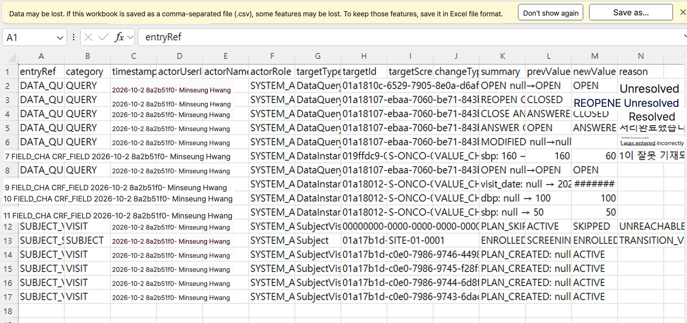
Cell A1 is “entryRef” — The first row is the header. Do not delete this row when you work with the data.
If the performer name appears with its Korean characters intact, it is normal. If the characters look garbled, open the file as UTF-8.
“#######” means the column is too narrow to show the full date. The value is not wrong, so double-click the column border to widen the column and the date will show.
The data ends at row 17 — that is 16 records excluding the header row, the same as the record count on the export screen 4.2. If the two values differ, the file is not complete.
Excel shows the message “Some features might be lost if you save this workbook in comma-separated values (.csv) format.” This does not mean the file is damaged.
Column layout (14 columns in the capture)
| Column | Contents |
|---|---|
| entryRef | Reference number of the history record — the same value as the ref at the bottom of the detail window |
| category · timestamp | Category code · change time |
| actorUserId · actorName · actorRole | Performer ID · name · role |
| targetType · targetId · targetScreeningNo | Target type · identifier · screening number |
| changeType · summary | Change type · one-line summary (the Summary column in the list) |
| prevValue · newValue · reason | Value before change · value after change · reason |
Precautions
Must check Data corruption · Form cannot be completed
- • Keep the downloaded file in its original form. If you follow Excel's prompt and use “Save As” to change the format, or change column width or alignment and then overwrite the file, the original you would use as submission or audit evidence is lost. If something needs fixing, make a copy and work on the copy, and keep the original as it is, together with the verification value (SHA-256) on the export screen.